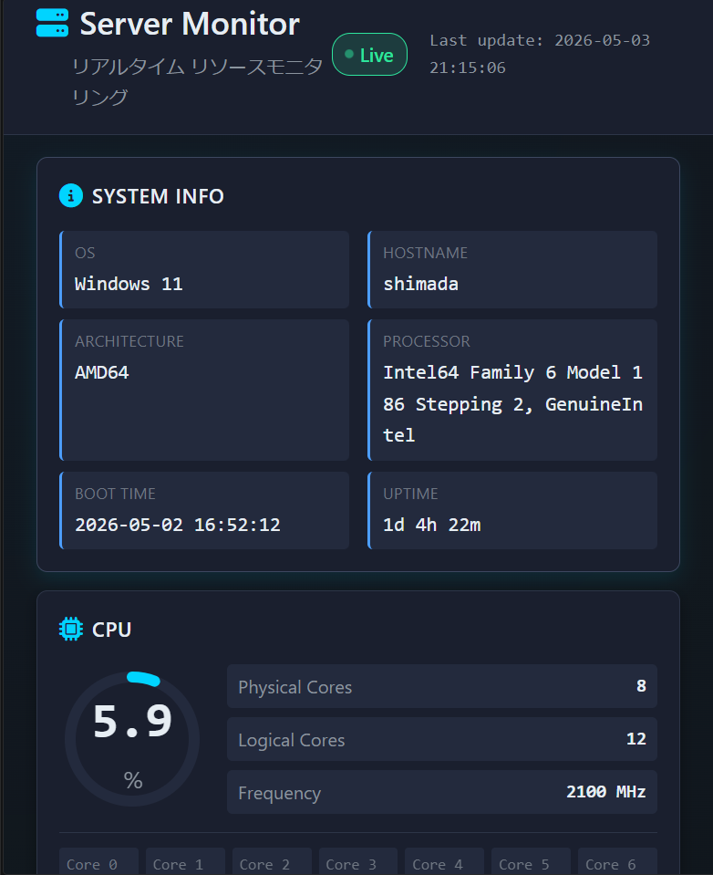

Ubuntu：SSHの設定不備から復旧
意図的な設定不備を検出して復元し、構文検査の終了コード255→0とSSH鍵接続の成功を確認しました。
結果と原画像未経験から、インフラエンジニアを目指しています
Ubuntuの初期設定・監視・復旧を、手元の仮想マシンで学習しています。
AIの案内を受けた本人操作と、確認結果を公開しています。
Linuxサーバーの構築・運用を志望しています。手順書と確認者のあるIT事務・キッティング、監視・運用補助から経験を積みたいと考えています。
製造・物流などに約15年従事し、動線と帳票の改善で自分の作業時間を1日約1時間短縮しました。2026年10月7日からIT企業でトライアル就労・社内研修中です。勤務開始時期は相談となります（2026年11月5日確認）。
経歴・資格を見る
AIの手順案内を受け、本人がVMを操作・確認した個人学習です。実務経験ではなく、独力での原因特定・再現・説明は未確認です。